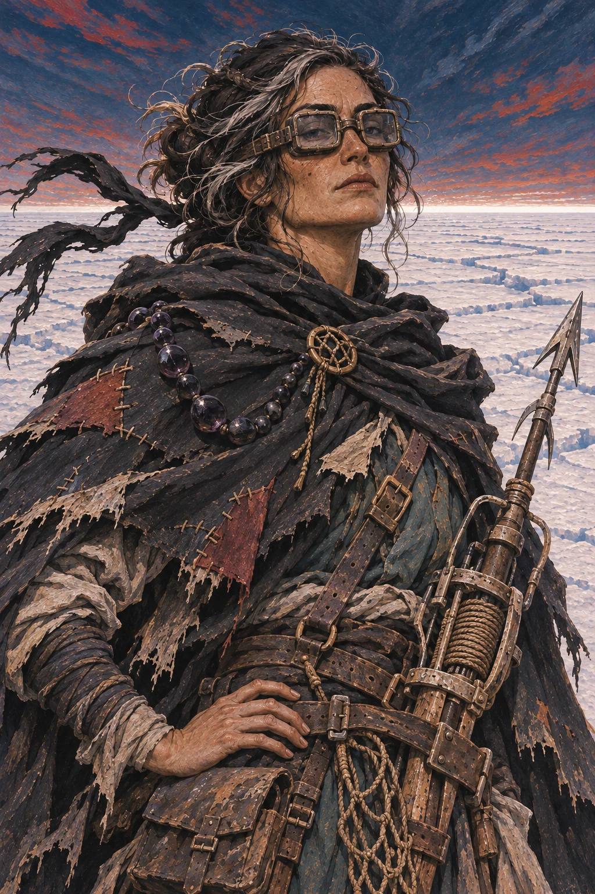

Вырезать свою долю на шкуре-карте, снарядить «Седьмую долю» и до ночи выйти на белое дно; к концу вечера стол должен уметь читать лист следа сам.
Оксинья Брусова

Гордея ВарРадан КосойВерек Тихий
Если партия изменила план
Группа отказалась от задания
Гарпунов брать не будем. Вывезем людей с разорённых стоянок. Отвозим людей от разорённой стоянки. Ладья прибывает без добычи. Семьи решают, выходить ли за Белорезом в следующий сезон.
На столе долей Порога Вдов распята дублёная шкура — карта белого дна, вся в надрезах, старых и новых, один поверх другого. Шкура пахнет дёгтем и солью; по краям её прибили к столу медными гвоздями, позеленевшими от рассола. Вокруг стоят капитаны артелей, за их спинами — охотники, а дальше, у вдовьих домов, молча смотрят женщины в чёрных платках. Оксинья Брусова раскладывает рядом со шкурой семь ножей и говорит одно слово: «Режьте». Радан Косой первым вгоняет нож в голову полукруга, туда, где на карте Котёл Неприливов, и не убирает ладони с рукояти. Гордея Вар, не повышая голоса, вырезает его надрез вместе с куском шкуры и кладёт лоскут рядом. Сталь стоит над картой, и на площади становится так тихо, что слышно, как ветер пересыпает соль по камням. Седьмой нож Оксинья подвигает к вам: «Седьмую долю всегда берут чужие. Плата за возвращение есть. За смерть — только песни». Внизу, у Утопленной лестницы, на мачтах ладей сохнут вдовьи платки.
Подготовка и роли
ШКАЛЫ. «Лист следа» лежит на столе с первой сцены; метки ставят карандашом при игроках, числа — вслух. Старт: след 2, вода 7, шлюпок 2 (3 при 5–7 игроках). След 0–12: 0–2 холодный (на стоянке вода ещё −1); 3–5 тёплый; 6–7 горячий; 8 ПОВОРОТ — борозда идёт по вашим полозьям, стрелка назад; 9–10 за кормой; 11 под килем; 12 он бьёт. Ближе: первый взгляд +1; ночная погоня +1; день по борозде +1; ошибка следопыта +2; бой +1; гребень кружит +1; ночь на линьке +1; несолёная кровь или пластина на ночь +1; старый полукруг +2; ночь при 8+ +1. Дальше: тихий ход −1 и бочка; камень −1; пурга −1; соль снимает «кровь». После поворота они действуют, но ниже 8 метка не опускается. Ночь по порядку: вода −1 (при 0–2 ещё −1) → линька → кровь → при 8+ +1 → на 12 удар. Удар: шлюпка (не последняя), две бочки или ранение дозорного (3d10, не ниже 1 хита, истощение); след 11. До вечера 7 удар один раз, дальше метка стоит на 12; в вечер 7 возможен ещё один. Вода 0–8: седьмая доля +1, долг +1; цены в бочках, которых нет, нет. Вода 0 — одна степень истощения на следующий вечер. Если поворот пришёл, когда метка была 4 или ниже, отметьте это на листе: в финале он всплывёт позже. Поворот обязателен в вечер 7, сцена 1. Путь среднего стола для примеров (Луту не нанимает, осложнений по желанию ведущего не берёт): 3/7, 5/5, 6/4, 7/5, 7/4, 9/4, 11/3. Этот вечер учит лист игрой: нож в старой бороздке, лишняя бочка, гребень, повернувший на стук. «Каждое изменение — вслух и карандашом. Если стол спорит, тихо идти или быстро, назовите обе цены: шаг следа и бочку».
Дерва — доля и Любава: седьмой лоскут и гарпун с долгим линём, выбор рулевой шлюпки и позиции на ладье.
Тарон — надрезы и гребень: старые линии отхода, светлая полоса в мачтовое стекло, каменные метки.
Сельма — вдовы и платки: семь платков, погребальная соль, имена на узлах и разговор со старшей вдовой.
Места 4–7: Эйран сверяет образец ночного стекла с биркой; Ната проверяет канаты, на которых спускают шлюпки; Воск называет цену пластин раньше Оксиньи; Рива узнаёт имена на семи платках. При 6–7 игроках, пока одни режут долю, пара грузит бочки у лестницы и приносит к столу одну новость.
Сцена 1 · 50 минут
Нож в доле
Ножи ещё дрожат в шкуре. Радан Косой не убирает ладони с рукояти в голове полукруга, у ребра Котла, и усмехается так, будто ему больно: «Сначала вспомните, кто остался под Клыком. Потом режьте». Гордея Вар кладёт вырезанный кусок шкуры рядом с его ножом, ровно, как о погоде: «Верёвка была одна, Радан. И место над линькой было одно». Верек Тихий за её плечом оглядывается на неё и шепчет вам: «Простите. Режьте быстрее, пока они не начали». Оксинья Брусова считает доли вслух, не поднимая глаз: «Голова, два плеча, два бока, хвост — шесть. Седьмая — ваша». Ведущий кладёт на стол «Лист следа» и при всех ставит карандашом три метки: «След два — он далеко. Воды семь — по бочке на ночь. Шлюпок две». Оксинья кивает на бочки у стены: «Семь. Восьмую, на обратную дорогу, найдёте сами». Седьмой нож тяжёл. Тот, кто режет, чувствует: лезвие само уходит в старую бороздку, как полоз в колею. Под свежим надрезом лежат другие, слой на слое («Старые надрезы под новыми»); Тарон узнаёт среди них линию своего отхода. На краю стола вырезаны две строки платы («Две строки платы»); ведущий выдаёт «Условия седьмой доли», а когда лоскут вырезан, — «Набросок шкуры-карты». Лоскут, «Седьмой лоскут», ложится к Дерве рядом с гарпуном Любавы; у Тарона на шнуре каменные метки. Соль белеет в прорезях стола и в швах рукавов.
Выборы
Вести нож по старым надрезам и взять восточную седьмую, как положено: Оксинья ставит на борт лишнюю бочку, вода 7 → 8.
Вырезать долю вне старых надрезов: капитаны возмущены, бочки нет (вода 7), Радан хохочет и зовёт к своему костру в Трёх Глотках.
Решить спор о голове: отдать Радану (Гордея холодна в вечера 3–4), отдать Гордее (Радан холоден и рассказ о брате даёт только за вопрос о мачте) или вогнать свой нож поперёк обоих надрезов — «ничья», оба злы поровну.
Провести пальцами по шкуре, посмотреть её на просвет и спросить Оксинью, сколько последних охот она помнит.
Проверка и путь без броска
Мудрость (Проницательность) Сл 12 к Оксинье. Успех: пойманная на слове, она ставит бочку без условия о пластинах (вода +1, не выше 8) — «Семь последних охот. Считайте, что эта бочка — за восьмую». Провал или без броска: спросить, сколько последних охот она помнит, — «Семь. Нож тупится, а охота нет»; бочки сверх доли нет. Слои под надрезами видны без броска любому, кто ведёт нож или смотрит шкуру на просвет. Шкалы вслух: след 2, вода 7, шлюпок 2 (3 при 5–7 игроках); восточная седьмая — вода 8.
Если не получилось
Если шкуру не осматривали, нож всё равно соскальзывает в старую бороздку у того, кто режет, и ведущий говорит это вслух; Оксинья добавляет: «Так резали всегда». Строки платы она читает сама: «Малая — за возвращение. Большая — за смерть». Если стол медлит, Радан хлопает ладонью по восточной доле: «Она ваша. Берите, пока Гордея не придумала другой нож».
Сцена 2 · 50 минут
Вдовьи платки
Вдовьи дома стоят над бывшим берегом; на каждой двери чёрный платок с белой каймой соли. «Седьмую долю» снаряжают у верхних ступеней Утопленной лестницы: шлюпки спускают на канатах, стойку гарпунов пристёгивают к борту зубьями вниз, бочки катят по доскам. Ведущий спрашивает, кто бочкарь, и отдаёт ему карандаш: каждая бочка, что приходит или уходит, — клетка на листе. Если взяли восточную седьмую по старым надрезам, Оксинья сама ставит на борт лишнюю бочку и считает вслух: «Восемь. Седьмую долю всегда берут чужие. Не обижайтесь: у нас просто кончились свои». Бочкарь закрашивает восьмую клетку. На мачтах других ладей висят старые, выцветшие платки — по своим мёртвым. Свежий платок старшая вдова вяжет заранее только на мачту «Седьмой доли» и не смотрит на вас: «Чужим вешаем заранее. Своих успеваем потом». Сельме она отдаёт семь платков с вышитыми именами и мешочек погребальной соли: «Соль — на кровь, чтобы он не учуял. Платок — на парус, если лодку надо пустить пустой». Оксинья показывает образец ночного стекла с биркой («Цена чёрной пластины»): «Один полный ящик — вся ваша премия. Пластины оплачивали каждый выход. Это не тайна, это счёт». Она предлагает бочку в долг: «Первые пластины — мне». Если на борту уже восемь, качает головой: «Восьми хватит. Девятую полозья не увезут». Если Дерва называет Любаву, вдова на миг перестаёт вязать: «Я вышивала её имя. Её платок на черте, вы его увидите».
Выборы
Взять бочку в долг «первые пластины — мне»: вода +1, но не выше 8 (при восьми бочках долг ничего не даёт). В вечер 4 Оксинья ждёт пластину.
Не брать долга и идти с тем, что есть: бочкарь считает глотки вслух.
Спросить Оксинью, где погибла прошлая седьмая и на что идут деньги за пластины.
Дерва называет Любаву вслух, или Сельма расспрашивает вдов об именах на семи платках.
Проверка и путь без броска
Проверки нет: что свежий платок висит только на вашей мачте, видно любому, кто посмотрит на соседние ладьи; Сельме это говорит и старшая вдова. Цену стекла Оксинья называет любому, кто спросит. Шкалы: долг — вода +1, только если на борту меньше восьми; след ±0.
Если не получилось
Если никто не спросил о платках, старшая вдова говорит Сельме сама: «На других мачтах — свои, старые. Свежий — только чужим». Если спросили, где погибла прошлая седьмая, Оксинья отвечает: «На отходе, у Котла. Доля такая», — и мерка на её шнурке звякает. Если долг не взяли, она не настаивает: «Тогда считайте глотки. Я умею».
Сцена 3 · 50 минут
Утопленная лестница
Сотни ступеней Утопленной лестницы обрываются над белым дном; соль хрустит на каждом пролёте и садится на ресницы. Оксинья провожает до первой площадки, придерживая платок: «Сорок домов ждут вас обратно. Не всех — так хоть рассказ». У подножия на полозьях стоит «Седьмая доля», за кормой две шлюпки. Рядом две разорённые стоянки («Две разорённые стоянки»): рваный брезент, изломанные полозья. На одной соль осела толстой коркой, на столбе вырезан год: пятнадцать лет назад, раньше всякого промысла. На закате на востоке белое лезвие режет корку с треском рвущейся парусины: гребень длиной в тридцать саженей. Ведущий передвигает метку: «Первый взгляд. След плюс один: было два, стало три. Тёплый — он в дне пути впереди». У соседней ладьи люди Радана бьют древками по корке и орут. Гребень замирает и поворачивает на звук, прежде чем уйти под соль. Радан хохочет: «Видали? Слышит! Пусть идёт ко мне — за ним должок за брата!» Гордея с нижней ступени, не повышая голоса: «Стучите громче, Радан. Он любит, когда стучат». Ведущий показывает на лист: так работают шум, бой и кровь — каждый приближает его на шаг. Отряд решает, как провести ночь. Ведущий называет обе цены: погоня под парусом — след плюс один, зато завтра вы уже на борозде; стоянка у лестницы — след стоит, но утром борозду придётся читать. Ночь — бочка в любом случае. «Будь след два, — добавляет ведущий, — вы бы отдали ещё бочку на поиски борозды».
Выборы
Погнаться за гребнем в темноте под парусом: след +1 (было 3, стало 4); в вечер 2 читать след в первой сцене не нужно — вы на борозде.
Встать на ночь у подножия лестницы: след остаётся 3; в вечер 2 в сцене 1 борозду читают с риском ошибки.
Обойти обе стоянки и сравнить, как осела соль; спросить Оксинью или Верека, что здесь было.
Распределить роли на ладье: рулевой, следопыт, дозорный, бочкарь (роли можно совмещать).
Проверка и путь без броска
Проверки нет: светлую полосу у основания гребня видит любой, кто возьмёт мачтовое стекло (Тарон — первым). Возраст стоянок виден без броска. Шкалы вслух: первый взгляд — след 2 → 3; погоня — 3 → 4. Ночь — вода −1: с восточной седьмой 8 → 7; без неё и без долга 7 → 6; с одним долгом 8 → 7. Ведущий отмечает каждое число карандашом.
Если не получилось
Если в стекло никто не смотрел, Радан кричит с ладьи: «Видели белое у него на спине? Запомните, куда смотреть!» — и ведущий называет полосу вслух. Если стоянки не осмотрели, Верек, проходя мимо с мешком соли, тихо говорит: «Простите. Ту, старую, разбили ещё до промысла. Мы её не трогаем».
Две строки платы
На краю стола долей, там, где капитаны кладут локти, вырезаны две строки: одна короткая, другая длиннее и глубже, будто её резали дважды. В прорезях белеет соль, края букв истёрты ладонями.
Что можно установить
Малая плата положена за возвращение с точным рассказом о пути. Большая премия выплачивается только за подтверждённую гибель Белореза. Платы за мщение и за красивую песню в строках нет.
Получение
Провести пальцем по краю стола и прочесть обе строки. Проверка не нужна: вырезано крупно, читается любым.
Запасной путь
Если герои не заглянули на край стола, Оксинья Брусова сама читает строки вслух, когда раскладывает доли: «Малая — за возвращение. Большая — за смерть. Это всё, что у нас записано».
Старые надрезы под новыми
На шкуре-карте под свежими разрезами проступают другие: тонкие, зарубцованные, лежащие слой на слое. Кое-где кожа почти прозрачна от ножей.
Что можно установить
Полукруг из семи долей режут одинаково уже семь лет: те же линии вокруг Котла Неприливов. Седьмая доля всегда восточная, у начала дороги отхода, и каждый раз её отдают чужим.
Получение
Провести пальцами по шкуре или поднять край к свету и посмотреть на просвет: слои видны без броска. Тарон узнаёт среди них линию своего прошлого отхода.
Запасной путь
Если шкуру не рассматривали, спросить Оксинью, почему так режут: «Так резали всегда». Раздатка «Набросок шкуры-карты» показывает двойные линии на наброске.
Цена чёрной пластины
На столе у Оксиньи лежит образец ночного стекла, тёмный, как вода в колодце, и бирка с ценой, привязанная к шнурку.
Что можно установить
Чёрные пластины панциря Белореза идут на дорогое ночное стекло. Один полный ящик стоит всей большой премии. Продажа пластин оплачивала каждый выход артелей.
Получение
Спросить цену образца или прочесть бирку. Оксинья отвечает без броска и не скрывает, откуда берутся деньги на выход.
Запасной путь
Воск или любой, кто когда-либо торговал, называет цену по памяти. Нена при расчёте за воду показывает ту же мерку пластин.
Две разорённые стоянки
У подножия лестницы лежат две брошенные стоянки: кострища, рваный брезент, изломанные полозья. Одна заметно старше другой, соль на её обломках осела толстой коркой.
Что можно установить
Белорез разорял стоянки и до промысла: старая стоянка разгромлена пятнадцать лет назад, как видно по бытовым знакам. Зверь опасен сам по себе, а не только из-за охотников.
Получение
Обойти обе стоянки и сравнить, как осела соль на обломках. Без броска видно, что одна старше другой. Дата вырезана на столбе старой стоянки.
Запасной путь
Если стоянки пропустили, Оксинья на вопрос о них называет год и добавляет: «Он и тогда не спрашивал, кто охотник».
Изменения после решений
Если Отряд взял восточную седьмую по старым надрезам. → В вечере 4 Гордея считает их «своими» и предлагает долю пластин за молчание. Если же резали вне надрезов — в вечере 4 Радан сам сажает их к своему костру и показывает обломок мачты.
Если Отряд погнался за гребнем ночью (след 4). → Вечер 2 начинается со следом 4, и чтение следа в сцене 1 не нужно. Если встали у лестницы (след 3) — в сцене 1 вечера 2 читают след, с риском ошибки.
Выдать в нужный момент
Лист следа — Вечер 1, сцена 1: сразу после вступления кладётся на стол и остаётся до конца кампании. Ведущий отмечает карандашом при игроках: след 2, вода 7, шлюпок 2.
Условия седьмой доли — Вечер 1, сцена 1: при осмотре стола долей или когда Оксинья разъясняет условия.
Набросок шкуры-карты — Вечер 1, сцена 1: когда отряд режет свою долю или рассматривает старые надрезы под новыми.
Завершение вечера
«Седьмая доля» либо стоит на белом дне у подножия Утопленной лестницы, рядом с двумя разорёнными стоянками, либо уже идёт за гребнем в темноте, и полозья шипят по соли. Наверху, над бывшим берегом, гаснут окна вдовьих домов; свежий платок на мачте хлопает на западном ветру. Корка звенит тише, чем днём. Ведущий называет след и воду вслух, бочкарь сверяет клетки на листе: стол видит, с чем входит в первую ночь, и знает, что двигает каждую метку. Спросите каждого игрока, что его герой оставил в Пороге — долг, имя или обещание — и кому из капитанов он сегодня поверил меньше всех.